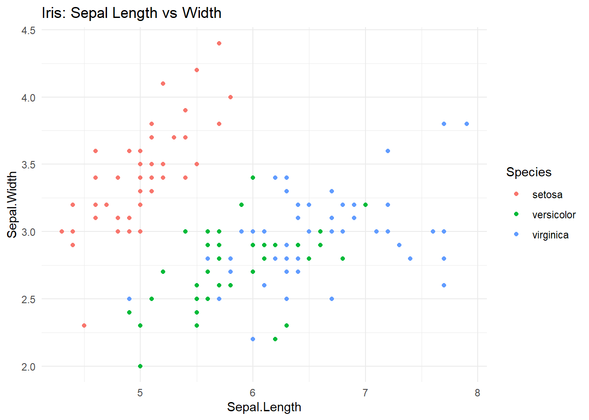

Objetos, indexación, data frames, lectura de datos, dplyr y gráficos
Author
Orlando Joaqui-Barandica
Published
August 23, 2025
1 Consola, operadores y funciones
Objetivo: dominar la consola, los operadores básicos y la sintaxis general de una función en R (nombre(argumentos)), con énfasis en buenas prácticas de asignación y ayuda integrada.
Tip
Atajos útiles:
- Ctrl + L limpia la consola.
- Escribe ?mean o help(mean) para abrir la ayuda de una función.
- Usa <- para asignar objetos (recomendado en R).
1.1 1.1 Consola y operadores aritméticos
Code
# La consola ejecuta expresiones directamente:3+4
[1] 7
Code
10-2
[1] 8
Code
6*7
[1] 42
Code
20/5
[1] 4
Code
2^5# potencia
[1] 32
Code
9^(1/2) # raíz cuadrada (también sqrt(9))
[1] 3
Code
# R es vectorizado: las operaciones se aplican elemento a elementoc(1, 2, 3) +c(10, 10, 10)
[1] 11 12 13
Code
c(1, 2, 3) *10
[1] 10 20 30
1.2 Asignación y nombres de objetos
Code
# Asignación: usa preferiblemente <-x <-c(1, 5, 8, 3, 7)x
[1] 1 5 8 3 7
Code
# Reasignación (sobrescribe el objeto)x <-c(1, 5, 8, 3, 7, 7, 77, 7, 7, 7)# Sensible a mayúsculas/minúsculas:X <-5x; X # son distintos
[1] 1 5 8 3 7 7 77 7 7 7
[1] 5
Code
# Buenas prácticas de nombres: snake_caseingresos_mes <-c(100, 120, 115)
Warning
Evita: espacios en nombres, tildes, o empezar con número. Prefiere snake_case (p. ej., ventas_totales).
1.3 Operadores relacionales y lógicos (para filtros)
2.6 Extra: seleccionar filas/columnas con índices y secuencias
Code
# Primeras 10 filas y columnas 1:3iris[1:10, 1:3]
Code
# Columnas no contiguas por índiceiris[ , c(1, 3, 5)]
Code
# Conjunto complementario (todas menos la 5)iris[ , -5]
2.7 Ejercicios
Extrae como data frame (no vector) únicamente la columna Petal.Width de iris.
Crea un objeto versicolor_largas con filas de iris donde Species == "versicolor" y Sepal.Length > 6.
Agrega a una copia de iris la columna area_petal = Petal.Length * Petal.Width y calcula su media.
Con otra base: usando mtcars (incluida en R), selecciona en un solo comando las filas 1:5 y 28:32 y las columnas mpg, hp, gear. Guarda el resultado en sub_mtcars.
Code
# Sugerencias de solución (puedes ocultar en clase si prefieres):# 1) Data frame con Petal.Width (iris)pw_df <- iris["Petal.Width"] # o iris[, "Petal.Width", drop = FALSE]str(pw_df)
'data.frame': 150 obs. of 1 variable:
$ Petal.Width: num 0.2 0.2 0.2 0.2 0.2 0.4 0.3 0.2 0.2 0.1 ...
# 3) área del pétalo (iris)iris2 <- irisiris2$area_petal <- iris2$Petal.Length * iris2$Petal.Widthmean(iris2$area_petal)
[1] 5.794067
Code
# 4) selección por filas y columnas en mtcars# mtcars viene en R base (32 filas, todas numéricas)sub_mtcars <- mtcars[c(1:5, 28:32), c("mpg", "hp", "gear")]sub_mtcars
3 Listas y extracción avanzada ([ ], [[ ]], $)
Objetivo: crear y manipular listas (estructuras jerárquicas que aceptan objetos de distinto tipo/tamaño), dominar la extracción con [ ], [[ ]] y $, y usar purrr::map() para operar sobre elementos.
Tip
Qué es una lista: un contenedor flexible. Puede guardar vectores, data frames, modelos, funciones y otras listas. Regla de oro:
- [ ] devuelve sublista (conserva la estructura lista),
- [[ ]] devuelve el elemento dentro de la lista,
- $ es azúcar sintáctico de [[ ]] para nombres válidos.
3.1 Crear listas con elementos heterogéneos
Code
# Lista con vector, data.frame y númeromi_lista <-list(A =c(1, 2, 3),B = iris,C =3)mi_lista # imprime nombres y tipos
# Añadir elementosmi_lista$nota <-"Ejemplo de lista con mezcla de tipos"mi_lista$pares <-seq(2, 10, by =2)# Remover elementos (poniendo NULL)mi_lista$entero_C <-NULLnames(mi_lista)
[1] "vector_A" "base_iris" "nota" "pares"
3.4 Listas anidadas y acceso profundo
Code
# Lista con sublistal2 <-list(meta =list(autor ="Orlando", curso ="TDBD"),datos = iris)# Acceso profundol2$meta$curso
[1] "TDBD"
Code
l2[["meta"]][["autor"]]
[1] "Orlando"
Code
l2[["datos"]][1:3, 1:2] # primeras 3 filas y 2 columnas de iris
3.5 Listas y tibble: columnas-lista
Code
library(tidyverse)# Agrupar iris por especie y anidar data por grupoiris_nested <- iris %>%group_by(Species) %>% tidyr::nest() # crea una columna 'data' tipo listairis_nested
Code
iris_nested$data[[1]] %>%head() # data.frame del primer grupo (setosa)
3.6 Operar sobre cada elemento con purrr::map
Code
# Calcular medias por grupo usando map (cada 'data' es un data.frame)resumen_por_especie <- iris_nested %>%mutate(medias = purrr::map( data,~summarise(.x,mean_sepal_len =mean(Sepal.Length),mean_sepal_wid =mean(Sepal.Width),mean_petal_len =mean(Petal.Length),mean_petal_wid =mean(Petal.Width)) ) ) %>%select(Species, medias) %>% tidyr::unnest(medias)resumen_por_especie
3.7 Aplicación: dividir un data frame en una lista de data frames (split)
Code
# split devuelve una lista donde cada elemento es el subconjunto por nivel del factoriris_list <-split(iris, iris$Species)names(iris_list)
# Promedios de Sepal.Length por especie con lapply/sapplyprom_sep_len <-sapply(iris_list, function(df) mean(df$Sepal.Length))prom_sep_len
setosa versicolor virginica
5.006 5.936 6.588
3.8 Ejercicios
Construye una lista llamada mi_modelo con:
meta = lista con autor = “TuNombre” y fecha = Sys.Date()
vars = vector c(“Sepal.Length”,“Sepal.Width”)
df = iris
Luego extrae solo la anchura del sépalo (Sepal.Width) del data frame guardado en mi_modelo.
Usando iris_list <- split(iris, iris$Species), calcula con sapply la mediana de Petal.Width para cada especie.
Con iris_nested, agrega una columna n_obs como map_int(data, nrow) y ordénalo de mayor a menor.
Crea una lista L <- list(num = 1:10, letras = letters[1:5]) y:
cambia el nombre letras por abc,
elimina num,
añade par = seq(2, 20, by = 2); imprime L.
Code
# Sugerencias de solución (puedes ocultar en clase si prefieres):# 1) Lista mi_modelo y extracciónmi_modelo <-list(meta =list(autor ="TuNombre", fecha =Sys.Date()),vars =c("Sepal.Length","Sepal.Width"),df = iris)mi_modelo$df[ , "Sepal.Width", drop =FALSE] # como data.frame
Code
# 2) Mediana de Petal.Width por especie (split + sapply)iris_list <-split(iris, iris$Species)sapply(iris_list, function(df) median(df$Petal.Width))
setosa versicolor virginica
0.2 1.3 2.0
Code
# 3) n_obs con map_int y ordenariris_nested %>%mutate(n_obs = purrr::map_int(data, nrow)) %>%arrange(desc(n_obs))
Code
# 4) Renombrar, eliminar y añadir en listaL <-list(num =1:10, letras = letters[1:5])names(L)[names(L) =="letras"] <-"abc"L$num <-NULLL$par <-seq(2, 20, by =2)L
4 Importar datos desde Excel (readxl) y verificación inicial
Objetivo: leer Salaries.xlsx desde la carpeta Datos/, verificar que se cargó correctamente (dimensiones, nombres, tipos) y dejar identificadas las columnas clave para trabajar en la siguiente sección.
Tip
Estructura de proyecto recomendada: guarda el archivo en Datos/Salaries.xlsx.
Si usas RStudio, abre el proyecto (.Rproj) para que las rutas relativas funcionen (no uses rutas absolutas de tu PC).
4.1 Lectura desde Datos/ y chequeo básico
Code
library(readxl)# Lectura simple (espera hoja 1 y encabezados en la 1ª fila)Salaries <-read_excel("Datos/Salaries.xlsx")# Vistazos rápidosnrow(Salaries); ncol(Salaries) # dimensiones
¿Error de archivo? Si aparece “No such file or directory”, confirma que el archivo está en Datos/ (misma carpeta raíz donde está este .qmd). Decimales en R: usa punto como separador (ej. 107300.00).
4.2 Columnas clave y tipos esperados
Para este curso usaremos principalmente: rank, sex, yrs.service, salary.
Code
# Selección de columnas clave (si existen en tu archivo)cols_clave <-c("rank", "sex", "yrs.service", "salary")cols_clave %in%names(Salaries)
[1] TRUE TRUE TRUE TRUE
Code
# Subconjunto (no falla si falta alguna: usa any_of)BaseSal <- dplyr::select(Salaries, dplyr::any_of(cols_clave))head(BaseSal)
Imprime las 3 categorías más frecuentes de rank (pista: table() o dplyr::count() + arrange(desc(n))).
Calcula el porcentaje de NA en salary y di si es aceptable para continuar (propón una acción).
Crea un objeto Base10 con solo filas donde yrs.service >= 10 y solo columnas rank, sex, yrs.service, salary.
(Exploratorio) Si salary venía como texto con $ o comas, demuestra con 2 ejemplos que parse_number() lo dejó numérico (muestra class() y una pequeña operación).
Code
# 1) Top 3 de ranktop_rank <- dplyr::count(BaseSal, rank, sort =TRUE)head(top_rank, 3)
Code
# 2) % NA en salarypct_na_salary <-mean(is.na(BaseSal$salary)) *100pct_na_salary
if (is.numeric(BaseSal$salary)) {# pequeña operación: promedio con NA ignoradosmean(BaseSal$salary, na.rm =TRUE)}
[1] 113706.5
5 Descriptivos univariados y manejo de NA (salarios)
Objetivo: calcular e interpretar media, mediana, moda, varianza, desviación estándar, cuantiles, coeficiente de variación y extremos sobre salary, cuidando los NA.
Tip
Regla de oro con NA: si hay valores faltantes y no los ignoras (na.rm = TRUE), muchas funciones devuelven NA.
5.1 Vector de trabajo y verificación
Code
#| label: s5-vector#| echo: true# Partimos de BaseSal creado en la sección anterior:# (si no existe, descomenta estas 3 líneas para crearlo rápido)# library(readxl)# Salaries <- read_excel("Datos/Salaries.xlsx")# BaseSal <- dplyr::select(Salaries, dplyr::any_of(c("rank","sex","yrs.service","salary")))# Vector de salarios:X <- BaseSal$salarylength(X); head(X)
[1] 397
[1] 139750 173200 79750 115000 141500 97000
Code
sum(is.na(X)) # cuántos NA hay
[1] 0
5.2 Media (promedio) y NA
Code
# Ejemplo didáctico con NAf <-c(3, 4, 5, 6, NA, 8)mean(f) # -> NA (no ignora NA)
# Moda (valor más frecuente) sin paquetes extra:tab <-sort(table(X), decreasing =TRUE) # tabla de frecuenciasmoda_base <-as.numeric(names(tab)[1])moda_base
[1] 92000
Code
# Opción con 'modeest' (si lo tienes):# install.packages("modeest") # descomenta si hace falta# library(modeest)# mlv(X, method = "mfv", na.rm = TRUE)[1]
5.4 Dispersión: Varianza, Desviación, Cuantiles e IQR
# %in% para varios valores (como IN en SQL)BaseSal %>%filter(rank %in%c("Prof","AssocProf")) %>%head()
Code
# Rangos numéricos: between(x, izq, der) incluye extremos# (si tu columna de antigüedad se llama 'yrs.service', ajusta el nombre)colnames(BaseSal)
[1] "rank" "sex" "yrs.service" "salary"
Code
# Intentamos adivinar el nombre correcto de antigüedad:nombre_ant <-intersect(c("yrs.service","yrs_service","years_service"), names(BaseSal))if (length(nombre_ant) ==1) { BaseSal %>%filter(dplyr::between(.data[[nombre_ant]], 10, 20)) %>%select(rank, sex, !!nombre_ant, salary) %>%head()}
Code
# NA: filtra no faltantes / faltantesBaseSal %>%filter(!is.na(salary)) %>%head()
Code
BaseSal %>%filter(is.na(salary)) %>%head()
Tip
Texto: usa stringr::str_detect(col, “patrón”) para filtrar por patrones. Ej.: filter(str_detect(rank, “Prof”)) mantiene todos los que contengan “Prof”.
6.4 arrange() y distinct(): ordenar y quitar duplicados
Code
# Orden ascendente por salaryBaseSal %>%arrange(salary) %>%head()
Code
# Orden descendenteBaseSal %>%arrange(desc(salary)) %>%head()
Code
# Orden múltiple: primero por rank, luego salary descBaseSal %>%arrange(rank, desc(salary)) %>%head(10)
Code
# Filas únicas (en todas las columnas actuales)BaseSal %>%distinct() %>%head()
Code
# Únicas por subset (combinación de rank y sex)BaseSal %>%distinct(rank, sex, .keep_all =TRUE) %>%head()
6.5 Ejercicios
Crea Base_gte100 con filas donde salary >= 100000 y solo columnas rank, sex, salary. Ordénala de mayor a menor salario.
Deja únicamente las filas únicas por rank y sex manteniendo todas las columnas (pista: .keep_all = TRUE).
Selecciona todas las columnas numéricas y, a partir de esa base, quédate con filas donde ninguna es NA (complete.cases).
(Si tu columna de antigüedad existe) crea Base_10_20 con filas donde la antigüedad esté entre 10 y 20 (incluyente) y muéstrala ordenada por rank y salary descendente.
Objetivo: crear y transformar variables de forma segura; recodificar categorías; manejar NA; aplicar transformaciones a muchas columnas a la vez con across().
Tip
Trabajaremos sobre BaseSal de la sección anterior (rank, sex, yrs.service, salary).
Si tu columna de antigüedad tiene otro nombre, el código intenta detectarla.
Code
#| label: s7-setup#| echo: truelibrary(tidyverse)# Si BaseSal no existe, reintenta crearlo desde Salaries:if (!exists("BaseSal")) {if (!exists("Salaries")) {library(readxl) Salaries <-read_excel("Datos/Salaries.xlsx") } BaseSal <- dplyr::select(Salaries, dplyr::any_of(c("rank","sex","yrs.service","salary")))}# Detectar posible nombre de antigüedadnombre_ant <-intersect(c("yrs.service","yrs_service","years_service"), names(BaseSal))nombre_ant <-if (length(nombre_ant) ==1) nombre_ant elseNA_character_nombre_ant
[1] "yrs.service"
7.1 Crear variables con mutate() y transmute()
mutate() añade columnas manteniendo las existentes. transmute() devuelve solo las columnas creadas/seleccionadas.
Code
# Tasa de cambio hipotética para COP (ejemplo didáctico)tasa_cop <-4556.04Base1 <- BaseSal %>%mutate(salary_cop = salary * tasa_cop, # conversiónlog_salary =log(salary), # transformación# ingreso_ajustado: si falta salary, usa 0 (solo para ilustración)ingreso_ajustado =if_else(is.na(salary), 0, salary) )head(Base1)
Code
# Sólo devolver las columnas nuevas y alguna clave:Base1_min <- BaseSal %>%transmute(rank, sex, salary_cop = salary * tasa_cop, log_salary =log(salary))head(Base1_min)
Warning
No imputes “0” a ciegas. Acá se usa con fin didáctico. En problemas reales, documenta y justifica cualquier imputación.
7.2 Condiciones con if_else() y case_when()
if_else(test, yes, no) para dos ramas. case_when() para múltiples condiciones (categorías).
Estandariza valores de texto y arregla niveles de factores.
Code
# Limpieza rápida de 'sex' a valores canónicosBase3 <- Base2 %>%mutate(sex = sex %>%as.character() %>% stringr::str_trim() %>% stringr::str_to_title(),sex = dplyr::recode(sex,"M"="Male", "F"="Female",.default = sex ) %>%factor(levels =c("Female","Male")) )# Estandarizar 'rank' (si llega desordenado o con variantes)Base3 <- Base3 %>%mutate(rank = rank %>%as.character() %>% stringr::str_squish(),rank = dplyr::recode(rank,"Assistant Professor"="AsstProf","Associate Professor"="AssocProf","Asstprof"="AsstProf","Assocprof"="AssocProf","Professor"="Prof",.default = rank ) %>%factor(levels =c("AsstProf","AssocProf","Prof")) )count(Base3, rank, sex)
7.4 Manejo de faltantes: coalesce() y replace_na()
coalesce(a, b, c) toma el primer no-NA de izquierda a derecha. tidyr::replace_na() asigna un valor por defecto a los NA de columnas específicas.
Code
# Si existieran dos columnas de antigüedad (ej.: yrs.service y yrs_service),# puedes fusionarlas en una sola sin perder datos no-NA:if (all(c("yrs.service","yrs_service") %in%names(BaseSal))) { Base3 <- Base3 %>%mutate(yrs.service =coalesce(`yrs.service`, yrs_service))}# Reemplazar NA en 'salary' por la mediana (solo para práctica, no recomendado sin análisis)med_sal <-median(Base3$salary, na.rm =TRUE)Base3_demo <- Base3 %>% tidyr::replace_na(list(salary = med_sal))sum(is.na(Base3$salary)); sum(is.na(Base3_demo$salary))
[1] 0
[1] 0
Important
Buenas prácticas: antes de reemplazar NA, pregúntate por qué faltan y si la imputación distorsiona el análisis (anota tu decisión).
7.5 Transformaciones masivas con across()
Aplica una función a muchas columnas a la vez.
Code
# Estandarizar (z-score) todas las columnas numéricas, devolviendo nuevas columnas *_zBase4 <- Base3 %>%mutate(across(where(is.numeric), ~as.numeric(scale(.x)), .names ="{.col}_z") )# Redondear a 2 decimales algunas columnas numéricas existentes (sin crear nuevas)Base5 <- Base3 %>%mutate(across(c(salary, salary_cop, log_salary), ~round(.x, 2)) )# Crear indicadores TRUE/FALSE si una numérica está por encima de su Q3q3_salary <-quantile(Base3$salary, 0.75, na.rm =TRUE)Base6 <- Base3 %>%mutate(salary_gt_q3 = salary > q3_salary)head(select(Base4, salary, salary_z))
Code
head(select(Base6, salary, salary_gt_q3))
7.6 Operaciones por fila: rowwise() (cuando depende de varias columnas)
Útil si necesitas combinar varias columnas en una sola operación por fila.
8 Resúmenes con group_by() + summarise() (conteos, medias, top-N, tablas)
Objetivo: agrupar datos y calcular indicadores por grupo (conteos, medias/medianas, dispersiones), aplicar funciones a múltiples columnas con across(), extraer Top-N por grupo y producir tablas anchas para reporte.
Tip
Partimos de BaseSal (sección 6–7). Detectamos automáticamente la columna de antigüedad si viene como yrs.service/yrs_service.
# Conteo simple por una variablecount(BaseSal, rank, sort =TRUE)
Code
# Conteo por dos variables (tabla de frecuencia)count(BaseSal, rank, sex, sort =TRUE)
Code
# Agregar total de filas como columna (tally global)BaseSal %>%add_tally(name ="n_total") %>%head()
Code
# En summarise: tamaño del grupo con n(), categorías únicas con n_distinct()BaseSal %>%group_by(rank) %>%summarise(n =n(),sex_unicos =n_distinct(sex),.groups ="drop")
# Medidas por rank y sexores_rank_sex <- BaseSal %>%group_by(rank, sex) %>%summarise(n =n(),media =mean(salary, na.rm =TRUE),mediana =median(salary, na.rm =TRUE),q1 =quantile(salary, .25, na.rm =TRUE),q3 =quantile(salary, .75, na.rm =TRUE),.groups ="drop_last"# conserva el 1er nivel de agrupación si quieres seguir encadenando )res_rank_sex %>%arrange(rank, sex)
8.3 Resumir varias columnas a la vez con across()
Code
# Elegimos columnas numéricas de interés (si existe años de servicio la incluimos)vars_resumir <-c("salary", nombre_ant)vars_resumir <- vars_resumir[vars_resumir %in%names(BaseSal)]res_multi <- BaseSal %>%group_by(rank, sex) %>%summarise(across(all_of(vars_resumir),list(mean =~mean(.x, na.rm=TRUE),sd =~sd(.x, na.rm=TRUE),med =~median(.x, na.rm=TRUE)),.names ="{.col}_{.fn}"),.groups ="drop" )res_multi %>%arrange(rank, sex)
8.4 Promedios ponderados (idea) y funciones propias
Code
# Si tuvieras un peso (ej. años de servicio como proxy sólo para ilustrar):if (!is.na(nombre_ant)) { res_pond <- BaseSal %>%filter(!is.na(.data[[nombre_ant]])) %>%group_by(rank) %>%summarise(media_w =weighted.mean(salary, w = .data[[nombre_ant]], na.rm =TRUE),n =n(),.groups ="drop" ) res_pond}
# Top 3 salarios dentro de cada 'rank'top3_por_rank <- BaseSal %>%group_by(rank) %>%slice_max(order_by = salary, n =3, with_ties =FALSE) %>%arrange(rank, desc(salary))top3_por_rank
Code
# El salario mínimo por sexo (1 fila por grupo)min_por_sex <- BaseSal %>%group_by(sex) %>%slice_min(order_by = salary, n =1, with_ties =FALSE)min_por_sex
8.6 De largo a ancho para reporte: pivot_wider()
Code
# Media de salary por rank y sex en formato ancho (columnas = sex)tabla_ancha <- BaseSal %>%group_by(rank, sex) %>%summarise(media =mean(salary, na.rm =TRUE), .groups ="drop") %>% tidyr::pivot_wider(names_from = sex, values_from = media)tabla_ancha
8.7 (Opcional) Exportar a CSV para el informe
Code
# Dir de salidaif (!dir.exists("output")) dir.create("output")readr::write_csv(res_multi, "output/resumen_multivariado.csv")readr::write_csv(tabla_ancha, "output/tabla_ancha_rank_sex.csv")list.files("output")
Crea res_rank con n, media, sd, mediana de salary por rank, ordenado por media descendente.
Produce una tabla ancha con la mediana de salary por rank (filas) y sex (columnas).
Extrae el Top-5 salarios por sex (sin empates) y ordénalo de mayor a menor.
Si tienes años de antigüedad: calcula, por sex, el promedio ponderado de salary usando como peso esa antigüedad (solo como práctica).
Construye un reporte con summarise(across()) que, por rank, calcule para salary: mean, sd, q1 (0.25), q3 (0.75) y cv (usa la función de arriba), con nombres tipo salary_mean, salary_q1, etc.
Code
# 1) Resumen por rank ordenado por media descres_rank <- BaseSal %>%group_by(rank) %>%summarise(n =n(),media =mean(salary, na.rm=TRUE),sd =sd(salary, na.rm=TRUE),mediana =median(salary, na.rm=TRUE),.groups ="drop") %>%arrange(desc(media))res_rank
Code
# 2) Tabla ancha con mediana por rank x sexmed_rank_sex_wide <- BaseSal %>%group_by(rank, sex) %>%summarise(mediana =median(salary, na.rm =TRUE), .groups ="drop") %>% tidyr::pivot_wider(names_from = sex, values_from = mediana)med_rank_sex_wide
Code
# 3) Top-5 salarios por sextop5_sex <- BaseSal %>%group_by(sex) %>%slice_max(order_by = salary, n =5, with_ties =FALSE) %>%arrange(sex, desc(salary))top5_sex
Code
# 4) Promedio ponderado por sex (si hay antigüedad)if (!is.na(nombre_ant)) { media_w_sex <- BaseSal %>%filter(!is.na(.data[[nombre_ant]])) %>%group_by(sex) %>%summarise(media_w =weighted.mean(salary, .data[[nombre_ant]], na.rm =TRUE),n =n(),.groups ="drop") media_w_sex}
9 Visualización: gramática de ggplot2 → ggplotly → plotly
Objetivo: entender la gramática de los gráficos en ggplot2, crear dos gráficos sencillos, dejar un apartado para enlazar o embeber tu clase completa en HTML, y mostrar cómo convertir y crear gráficos interactivos con ggplotly y la gramática nativa de plotly en R.
**stat_*():** transformaciones estadísticas (bins, densidad, smooth…), muchas ya vienen “dentro” del geom.
**scale_*():** controles de escalas, etiquetas y paletas (eje log, comas, porcentajes).
**coord_*():** sistemas de coordenadas (flip, polar, limits).
**facet_*():** paneles por subgrupos (facet_wrap, facet_grid).
**theme_*() / theme():** estilos visuales y ajustes finos.
labs(): títulos, subtítulos, ejes, leyendas.
Code
library(tidyverse)library(ggplot2)# Base mínima por si no existe:if (!exists("BaseSal")) {suppressWarnings({if (!exists("Salaries")) {library(readxl)if (file.exists("Datos/Salaries.xlsx")) { Salaries <-read_excel("Datos/Salaries.xlsx") } else {# muestra didáctica si no hay archivo Salaries <-tibble(rank =sample(c("AsstProf","AssocProf","Prof"), 120, TRUE),sex =sample(c("Female","Male"), 120, TRUE),`yrs.service`=sample(1:30, 120, TRUE),salary =round(rlnorm(120, 11, 0.25), 0) ) } } BaseSal <- dplyr::select(Salaries, dplyr::any_of(c("rank","sex","yrs.service","salary"))) })}
9.2 Dos gráficos sencillos con ggplot2
Dispersión con iris
Code
p_iris <-ggplot(iris, aes(x = Sepal.Length, y = Sepal.Width, color = Species)) +geom_point() +theme_minimal() +labs(title ="Iris: Sepal Length vs Width", x ="Sepal.Length", y ="Sepal.Width", color ="Species")p_iris

Barras: salario promedio por rank
Code
library(scales) # para etiquetas con comasprom_rank <- BaseSal %>%group_by(rank) %>%summarise(mean_salary =mean(salary, na.rm =TRUE), .groups ="drop")p_sal <-ggplot(prom_rank, aes(x =reorder(rank, mean_salary), y = mean_salary)) +geom_col() +coord_flip() +scale_y_continuous(labels =label_comma()) +theme_minimal() +labs(title ="Salario promedio por rank", x =NULL, y ="Salary (mean)")p_sal
layout() ajusta títulos, ejes, leyendas y márgenes.
Code
# Dispersión interactiva con mtcars (nativo plotly)p_plotly <-plot_ly(data = mtcars,x =~wt, y =~mpg,type ="scatter", mode ="markers",color =~factor(gear), # mapea color a 'gear' como factortext =~paste("Modelo:", rownames(mtcars)) # tooltip) %>%layout(title ="mtcars: Consumo vs Peso (plotly nativo)",xaxis =list(title ="Peso (1000 lb)"),yaxis =list(title ="Millas/galón"),legend =list(title =list(text ="Gears")) )p_plotly
Tip
usa ggplot2 cuando quieras una gramática declarativa y un tema consistente; usa ggplotly para interactividad rápida sobre gráficos ya definidos; o plotly nativo si quieres controlar a detalle interacciones y capas desde el inicio (trazas).
Source Code
---title: "Clase 02 – Limpieza y Transformación de Datos"subtitle: "Objetos, indexación, data frames, lectura de datos, dplyr y gráficos"author: "Orlando Joaqui-Barandica"date: last-modifiedformat: html: toc: true number-sections: true code-fold: show df-print: paged code-tools: true theme: cosmoexecute: echo: true warning: false message: falsefreeze: autoeditor: visual---## Consola, operadores y funciones> **Objetivo:** dominar la consola, los operadores básicos y la sintaxis general de una **función** en R (`nombre(argumentos)`), con énfasis en buenas prácticas de asignación y ayuda integrada.::: callout-tip**Atajos útiles:**\- `Ctrl + L` limpia la consola.\- Escribe `?mean` o `help(mean)` para abrir la ayuda de una función.\- Usa `<-` para asignar objetos (recomendado en R).:::### 1.1 Consola y operadores aritméticos```{r}#| label: s1-basicos#| echo: true# La consola ejecuta expresiones directamente:3+410-26*720/52^5# potencia9^(1/2) # raíz cuadrada (también sqrt(9))# R es vectorizado: las operaciones se aplican elemento a elementoc(1, 2, 3) +c(10, 10, 10)c(1, 2, 3) *10```### Asignación y nombres de objetos```{r}#| label: s1-objetos#| echo: true# Asignación: usa preferiblemente <-x <-c(1, 5, 8, 3, 7)x# Reasignación (sobrescribe el objeto)x <-c(1, 5, 8, 3, 7, 7, 77, 7, 7, 7)# Sensible a mayúsculas/minúsculas:X <-5x; X # son distintos# Buenas prácticas de nombres: snake_caseingresos_mes <-c(100, 120, 115)```::: callout-warningEvita: espacios en nombres, tildes, o empezar con número. Prefiere snake_case (p. ej., ventas_totales).:::### Operadores relacionales y lógicos (para filtros)```{r}#| label: s1-relacionales#| echo: true# Comparaciones devuelven TRUE/FALSE5>35==55!=3v <-c(2, 7, 10)v >5# Lógicos: & (y), | (o), ! (no)(5>3) & (2==2)(5<3) | (2==2)!TRUE```### Funciones: forma general, argumentos y ayuda```{r}#| label: s1-funciones#| echo: true# Forma general: nombre(argumento1 = valor1, argumento2 = valor2, ...)# Ejemplos comunes:mean(c(1, 2, 3)) # promediomean(c(1, 2, NA), na.rm =TRUE) # ignora NA (argumento con nombre)# Ayuda integrada:# ?mean # descomenta en tu IDE para ver documentación# args(mean) # muestra los argumentos```### Vectores y secuencias rápidas```{r}#| label: s1-vectores#| echo: true# Crear vectores con c()a <-c(10, 20, 30)# Secuencias:y <-1:5y# Secuencias con paso:seq(from =0, to =1, by =0.25)```### Indexación con corchetes \[\]```{r}#| label: s1-index#| echo: truey <-23:67# vector de 45 elementosy[16] # elemento 16 (R indexa desde 1)y[1:3] # primeros tres# Indexar por condición:y[y >50] # todos los > 50```::: callout-importantDecimal en R: usa punto como separador (3.14), no coma.:::### EjerciciosCrea un vector z con los números del 5 al 25 y calcula:- la suma total,- el promedio,- el porcentaje de elementos mayores a 15.- Define w \<- c(2, 4, NA, 6, 8, NA) y calcula la media ignorando los NA.- Usa ?sum para revisar los argumentos; prueba sum(z, na.rm = TRUE).```{r}#| label: s1-ejercicios#| echo: true# Sugerencia de solución (puedes ocultar en clase si prefieres):z <-5:25sum(z)mean(z)mean(z >15) *100w <-c(2, 4, NA, 6, 8, NA)mean(w, na.rm =TRUE)# Revisión de ayuda (descomenta en tu IDE):# ?sum# args(sum)```## Data frames esenciales con `iris`> **Objetivo:** dominar el acceso por filas/columnas, entender la diferencia entre **vector** vs **data frame** al extraer, y practicar nombres y el operador `$`.::: callout-tip**`iris`** viene en R por defecto. Tiene 150 filas, 5 columnas: 4 numéricas (`Sepal.Length`, `Sepal.Width`, `Petal.Length`, `Petal.Width`) y 1 categórica (`Species`).:::### Primer vistazo: dimensiones, nombres y tipos```{r}#| label: s2-vistazo#| echo: trueiris # imprime el objetonrow(iris); ncol(iris)names(iris)str(iris) # estructura (tipos por columna)head(iris, 3) # primeras 3 filastail(iris, 3) # últimas 3 filas# Abre visor en IDE (descomenta si usas RStudio/Posit):# View(iris)```::: callout-notestr() es tu amiga: te muestra tipo de dato por columna y ejemplos de valores.:::### Indexación por posición: \[fila, columna\]```{r}#| label: s2-index-pos#| echo: trueiris[1, 2] # fila 1, columna 2 (valor escalar)iris[1, ] # fila 1 completa (data frame con 5 columnas)iris[ , 5] # columna 5 como VECTOR (por defecto)iris[ , 5, drop =FALSE] # columna 5 como DATA FRAME (mantén forma)```::: callout-warningPitfall común: iris\[, 5\] devuelve un vector; si necesitas un data frame, usa drop = FALSE o iris\["Species"\].:::### Indexación por nombre de columna```{r}#| label: s2-index-nombre#| echo: true# Data frame con 1 columna (por nombre):iris["Species"]# Vector de nombres para seleccionar varias:iris[ , c("Sepal.Length", "Sepal.Width")]# Nombres de columnas:names(iris)# Acceso con $ (útil y legible):iris$Speciesmean(iris$Sepal.Length)```### Filtros por condición (base R)```{r}#| label: s2-filtros#| echo: true# Filas donde Sepal.Length > 6largas <- iris[ iris$Sepal.Length >6, ]head(largas)# Filas de la especie "setosa"setosa <- iris[ iris$Species =="setosa", ]head(setosa)# Varias condiciones: AND (&) / OR (|)ej <- iris[ iris$Species !="setosa"& iris$Sepal.Width >=3, ]head(ej)```### Crear columnas y conservar clases```{r}#| label: s2-nuevas-cols#| echo: true# Crear una razón (ancho/largo del sépalo)base2 <- irisbase2$ratio_sepal <- base2$Sepal.Width / base2$Sepal.Length# Chequea tipos y primeras filasstr(base2)head(base2[, c("Sepal.Length","Sepal.Width","ratio_sepal")])```### Extra: seleccionar filas/columnas con índices y secuencias```{r}#| label: s2-extra-index#| echo: true# Primeras 10 filas y columnas 1:3iris[1:10, 1:3]# Columnas no contiguas por índiceiris[ , c(1, 3, 5)]# Conjunto complementario (todas menos la 5)iris[ , -5]```### Ejercicios1) Extrae como **data frame** (no vector) únicamente la columna `Petal.Width` de `iris`.\2) Crea un objeto `versicolor_largas` con filas de `iris` donde `Species == "versicolor"` y `Sepal.Length > 6`.\3) Agrega a una copia de `iris` la columna `area_petal` = `Petal.Length * Petal.Width` y calcula su media.\4) **Con otra base:** usando **`mtcars`** (incluida en R), selecciona **en un solo comando** las filas **1:5** y **28:32** y las columnas **`mpg`, `hp`, `gear`**. Guarda el resultado en `sub_mtcars`.```{r}#| label: s2-ejercicios#| echo: true# Sugerencias de solución (puedes ocultar en clase si prefieres):# 1) Data frame con Petal.Width (iris)pw_df <- iris["Petal.Width"] # o iris[, "Petal.Width", drop = FALSE]str(pw_df)# 2) versicolor con sépalos largos (iris)versicolor_largas <- iris[ iris$Species =="versicolor"& iris$Sepal.Length >6, ]nrow(versicolor_largas); head(versicolor_largas, 3)# 3) área del pétalo (iris)iris2 <- irisiris2$area_petal <- iris2$Petal.Length * iris2$Petal.Widthmean(iris2$area_petal)# 4) selección por filas y columnas en mtcars# mtcars viene en R base (32 filas, todas numéricas)sub_mtcars <- mtcars[c(1:5, 28:32), c("mpg", "hp", "gear")]sub_mtcars```## Listas y extracción avanzada (`[ ]`, `[[ ]]`, `$`)> **Objetivo:** crear y manipular **listas** (estructuras jerárquicas que aceptan objetos de distinto tipo/tamaño), dominar la extracción con `[ ]`, `[[ ]]` y `$`, y usar `purrr::map()` para operar sobre elementos.::: callout-tip**Qué es una lista:** un contenedor flexible. Puede guardar vectores, data frames, modelos, funciones y otras listas.\**Regla de oro:**\- `[ ]` devuelve **sublista** (conserva la estructura lista),\- `[[ ]]` devuelve el **elemento** dentro de la lista,\- `$` es azúcar sintáctico de `[[ ]]` para **nombres válidos**.:::### Crear listas con elementos heterogéneos```{r}#| label: s3-crear-lista#| echo: true# Lista con vector, data.frame y númeromi_lista <-list(A =c(1, 2, 3),B = iris,C =3)mi_lista # imprime nombres y tiposlength(mi_lista) # cuántos elementosnames(mi_lista) # nombres```### Extracción: \[ \] vs \[\[ \]\] vs \$```{r}#| label: s3-extraccion#| echo: true# [ ] -> SUBLISTA (sigue siendo lista)sub1 <- mi_lista[1]class(sub1) # "list"length(sub1)# [[ ]] -> ELEMENTO en posición (o nombre)elem1 <- mi_lista[[1]]class(elem1) # "numeric"elem1[3] # tercer valor del vector A# $ -> por nombre (equivale a [[ "nombre" ]])mi_lista$C # 3mi_lista[["C"]] # 3 (igual a $C)```::: callout-warningPitfall común: mi_lista\[1\] no es el vector, es una lista con un elemento. Si necesitas el vector, usa mi_lista\[\[1\]\].:::### Renombrar, añadir y remover elementos```{r}#| label: s3-modificar#| echo: true# Renombrarnames(mi_lista) <-c("vector_A", "base_iris", "entero_C")names(mi_lista)# Añadir elementosmi_lista$nota <-"Ejemplo de lista con mezcla de tipos"mi_lista$pares <-seq(2, 10, by =2)# Remover elementos (poniendo NULL)mi_lista$entero_C <-NULLnames(mi_lista)```### Listas anidadas y acceso profundo```{r}#| label: s3-anidadas#| echo: true# Lista con sublistal2 <-list(meta =list(autor ="Orlando", curso ="TDBD"),datos = iris)# Acceso profundol2$meta$cursol2[["meta"]][["autor"]]l2[["datos"]][1:3, 1:2] # primeras 3 filas y 2 columnas de iris```### Listas y tibble: columnas-lista```{r}#| label: s3-nest#| echo: truelibrary(tidyverse)# Agrupar iris por especie y anidar data por grupoiris_nested <- iris %>%group_by(Species) %>% tidyr::nest() # crea una columna 'data' tipo listairis_nestediris_nested$data[[1]] %>%head() # data.frame del primer grupo (setosa)```### Operar sobre cada elemento con purrr::map```{r}#| label: s3-map#| echo: true# Calcular medias por grupo usando map (cada 'data' es un data.frame)resumen_por_especie <- iris_nested %>%mutate(medias = purrr::map( data,~summarise(.x,mean_sepal_len =mean(Sepal.Length),mean_sepal_wid =mean(Sepal.Width),mean_petal_len =mean(Petal.Length),mean_petal_wid =mean(Petal.Width)) ) ) %>%select(Species, medias) %>% tidyr::unnest(medias)resumen_por_especie```### Aplicación: dividir un data frame en una lista de data frames (split)```{r}#| label: s3-split#| echo: true# split devuelve una lista donde cada elemento es el subconjunto por nivel del factoriris_list <-split(iris, iris$Species)names(iris_list)lapply(iris_list, nrow) # n de filas por especie# Promedios de Sepal.Length por especie con lapply/sapplyprom_sep_len <-sapply(iris_list, function(df) mean(df$Sepal.Length))prom_sep_len```### Ejercicios1. Construye una lista llamada mi_modelo con:- meta = lista con autor = "TuNombre" y fecha = Sys.Date()- vars = vector c("Sepal.Length","Sepal.Width")- df = irisLuego extrae solo la anchura del sépalo (Sepal.Width) del data frame guardado en mi_modelo.2. Usando iris_list \<- split(iris, iris\$Species), calcula con sapply la mediana de Petal.Width para cada especie.3. Con iris_nested, agrega una columna n_obs como map_int(data, nrow) y ordénalo de mayor a menor.4. Crea una lista L \<- list(num = 1:10, letras = letters\[1:5\]) y:- cambia el nombre letras por abc,- elimina num,- añade par = seq(2, 20, by = 2); imprime L.```{r}#| label: s3-ejercicios#| echo: true# Sugerencias de solución (puedes ocultar en clase si prefieres):# 1) Lista mi_modelo y extracciónmi_modelo <-list(meta =list(autor ="TuNombre", fecha =Sys.Date()),vars =c("Sepal.Length","Sepal.Width"),df = iris)mi_modelo$df[ , "Sepal.Width", drop =FALSE] # como data.frame# 2) Mediana de Petal.Width por especie (split + sapply)iris_list <-split(iris, iris$Species)sapply(iris_list, function(df) median(df$Petal.Width))# 3) n_obs con map_int y ordenariris_nested %>%mutate(n_obs = purrr::map_int(data, nrow)) %>%arrange(desc(n_obs))# 4) Renombrar, eliminar y añadir en listaL <-list(num =1:10, letras = letters[1:5])names(L)[names(L) =="letras"] <-"abc"L$num <-NULLL$par <-seq(2, 20, by =2)L```## Importar datos desde Excel (`readxl`) y verificación inicial> **Objetivo:** leer `Salaries.xlsx` desde la carpeta `Datos/`, verificar que se cargó correctamente (dimensiones, nombres, tipos) y dejar identificadas las columnas clave para trabajar en la siguiente sección.::: callout-tip**Estructura de proyecto recomendada:** guarda el archivo en `Datos/Salaries.xlsx`.\Si usas RStudio, abre el proyecto (`.Rproj`) para que las rutas relativas funcionen (no uses rutas absolutas de tu PC).:::### Lectura desde `Datos/` y chequeo básico```{r}#| label: s4-import#| echo: truelibrary(readxl)# Lectura simple (espera hoja 1 y encabezados en la 1ª fila)Salaries <-read_excel("Datos/Salaries.xlsx")# Vistazos rápidosnrow(Salaries); ncol(Salaries) # dimensionesnames(Salaries) # nombres de columnasstr(Salaries) # tipos por columnahead(Salaries, 3) # primeras filas```::: callout-warning¿Error de archivo? Si aparece "No such file or directory", confirma que el archivo está en Datos/ (misma carpeta raíz donde está este .qmd). Decimales en R: usa punto como separador (ej. 107300.00).:::### Columnas clave y tipos esperados> Para este curso usaremos principalmente: rank, sex, yrs.service, salary.```{r}#| label: s4-claves#| echo: true# Selección de columnas clave (si existen en tu archivo)cols_clave <-c("rank", "sex", "yrs.service", "salary")cols_clave %in%names(Salaries)# Subconjunto (no falla si falta alguna: usa any_of)BaseSal <- dplyr::select(Salaries, dplyr::any_of(cols_clave))head(BaseSal)# Tipos esperados (diagnóstico)# rank/sex: categóricas (character o factor)# yrs.service/salary: numéricassapply(BaseSal, class)```::: callout-noteSi salary aparece como texto (por símbolos \$, comas o espacios), conviértelo:- Opción rápida con readr::parse_number() (parte de tidyverse).:::```{r}#| label: s4-parse-number#| echo: true# Solo si detectas salary como texto con símbolos:# install.packages("readr") # si no estálibrary(readr)if ("salary"%in%names(BaseSal)) {if (is.character(BaseSal$salary)) { BaseSal <- BaseSal |> dplyr::mutate(salary =parse_number(salary)) # quita $ , . espacios }}str(BaseSal$salary)```### Valores faltantes (NA) y duplicados```{r}#| label: s4-na-dups#| echo: true# Conteo de NA por columnana_por_col <-sapply(BaseSal, function(x) sum(is.na(x)))na_por_col# Porcentaje de NApct_na <-round(colMeans(is.na(BaseSal)) *100, 2)pct_na# Duplicados exactos (en las columnas clave)dups <- dplyr::distinct(BaseSal) |>nrow() <nrow(BaseSal)dups # TRUE si hay filas duplicadas exactas```::: callout-importantRegla didáctica: no elimines NA o duplicados “a ciegas”. Decide por qué y cómo afectará tu análisis (lo documentarás cuando limpies en dplyr).:::### Estándares mínimos antes de analizar```{r}#| label: s4-estandares#| echo: true# Normaliza nombres por si llegan con mayúsculas/espacios# (sin añadir paquetes nuevos)names(BaseSal) <-names(BaseSal) |>tolower() |>gsub("\\s+", "_", x = _)# Convierte tipos si hace faltaif ("rank"%in%names(BaseSal)) BaseSal$rank <-as.factor(BaseSal$rank)if ("sex"%in%names(BaseSal)) BaseSal$sex <-as.factor(BaseSal$sex)if ("yrs.service"%in%names(Salaries) &&!"yrs.service"%in%names(BaseSal)) {# Si quedó afuera por nombres, tráela BaseSal$yrs.service <- Salaries$`yrs.service`}if ("yrs.service"%in%names(BaseSal)) { BaseSal$yrs.service <-suppressWarnings(as.numeric(BaseSal$yrs.service))}if ("salary"%in%names(BaseSal)) { BaseSal$salary <-suppressWarnings(as.numeric(BaseSal$salary))}str(BaseSal)```### Ejercicios1. Imprime las 3 categorías más frecuentes de rank (pista: table() o dplyr::count() + arrange(desc(n))).2. Calcula el porcentaje de NA en salary y di si es aceptable para continuar (propón una acción).3. Crea un objeto Base10 con solo filas donde yrs.service >= 10 y solo columnas rank, sex, yrs.service, salary.4. (Exploratorio) Si salary venía como texto con $ o comas, demuestra con 2 ejemplos que parse_number() lo dejó numérico (muestra class() y una pequeña operación).```{r}#| label: s4-ejercicios#| echo: true# 1) Top 3 de ranktop_rank <- dplyr::count(BaseSal, rank, sort =TRUE)head(top_rank, 3)# 2) % NA en salarypct_na_salary <-mean(is.na(BaseSal$salary)) *100pct_na_salary# 3) Filtrado por antigüedad (yrs.service >= 10)Base10 <- BaseSal |> dplyr::filter(yrs.service >=10) |> dplyr::select(rank, sex, yrs.service, salary)head(Base10)# 4) Verificación numérica (si aplica)class(BaseSal$salary)if (is.numeric(BaseSal$salary)) {# pequeña operación: promedio con NA ignoradosmean(BaseSal$salary, na.rm =TRUE)}```## Descriptivos univariados y manejo de NA (salarios)> **Objetivo:** calcular e interpretar **media, mediana, moda, varianza, desviación estándar, cuantiles, coeficiente de variación y extremos** sobre `salary`, cuidando los **NA**.::: callout-tip**Regla de oro con NA:** si hay valores faltantes y no los ignoras (`na.rm = TRUE`), muchas funciones devuelven `NA`. :::### Vector de trabajo y verificación```{r}#| label: s5-vector#| echo: true# Partimos de BaseSal creado en la sección anterior:# (si no existe, descomenta estas 3 líneas para crearlo rápido)# library(readxl)# Salaries <- read_excel("Datos/Salaries.xlsx")# BaseSal <- dplyr::select(Salaries, dplyr::any_of(c("rank","sex","yrs.service","salary")))# Vector de salarios:X <- BaseSal$salarylength(X); head(X)sum(is.na(X)) # cuántos NA hay```### Media (promedio) y NA```{r}#| label: s5-media#| echo: true# Ejemplo didáctico con NAf <-c(3, 4, 5, 6, NA, 8)mean(f) # -> NA (no ignora NA)mean(f, na.rm =TRUE) # ignora NAmean(na.omit(f)) # equivalente si quitas NA# Promedio de salarymean(X, na.rm =TRUE)```### Mediana y Moda```{r}#| label: s5-mediana-moda#| echo: true# Mediana (50% de observaciones <= mediana)median(X, na.rm =TRUE)# Moda (valor más frecuente) sin paquetes extra:tab <-sort(table(X), decreasing =TRUE) # tabla de frecuenciasmoda_base <-as.numeric(names(tab)[1])moda_base# Opción con 'modeest' (si lo tienes):# install.packages("modeest") # descomenta si hace falta# library(modeest)# mlv(X, method = "mfv", na.rm = TRUE)[1]```### Dispersión: Varianza, Desviación, Cuantiles e IQR```{r}#| label: s5-dispersion#| echo: truevar(X, na.rm =TRUE) # varianzasd(X, na.rm =TRUE) # desviación estándar# Cuantiles típicos: Q1, mediana (Q2), Q3quantile(X, probs =c(0.25, 0.5, 0.75), na.rm =TRUE)# Rango intercuartílico (IQR = Q3 - Q1)IQR(X, na.rm =TRUE)```### Coeficiente de Variación (CV) y extremos```{r}#| label: s5-cv-extremos#| echo: truecv <-function(x) sd(x, na.rm =TRUE) /mean(x, na.rm =TRUE) *100cv(X)min(X, na.rm =TRUE)max(X, na.rm =TRUE)summary(X) # resumen rápido (Min, Q1, Mediana, Media, Q3, Máx)```### Ejercicios1. Calcula el promedio truncado de salary quitando el 10% inferior y superior (mean(X, trim = 0.10, na.rm = TRUE)).2. Compara media vs mediana y di cuál representa mejor el “típico” salario si hay asimetría.3. Obtén los deciles de salary (quantile(X, probs = seq(0,1,0.1), na.rm = TRUE)).4. Construye un pequeño reporte con tibble que contenga: n, na, media, mediana, sd, iqr, cv, min, q1, q3, max.```{r}#| label: s5-ejercicios#| echo: true# 1) Promedio truncado (10%)mean(X, trim =0.10, na.rm =TRUE)# 2) Media vs Mediana (inspecciona ambos)c(media =mean(X, na.rm =TRUE), mediana =median(X, na.rm =TRUE))# 3) Decilesdeciles <-quantile(X, probs =seq(0, 1, by =0.1), na.rm =TRUE)deciles# 4) Mini-reporte en tibblelibrary(tibble)reporte <-tibble(n =sum(!is.na(X)),na =sum(is.na(X)),media =mean(X, na.rm =TRUE),mediana=median(X, na.rm =TRUE),sd =sd(X, na.rm =TRUE),iqr =IQR(X, na.rm =TRUE),cv =cv(X),min =min(X, na.rm =TRUE),q1 =quantile(X, .25, na.rm =TRUE),q3 =quantile(X, .75, na.rm =TRUE),max =max(X, na.rm =TRUE))reporte```## Gramática `dplyr` I: `select`, pipe (`%>%`) y `filter`> **Objetivo:** seleccionar columnas de forma flexible, encadenar pasos con **pipes** y filtrar filas con condiciones lógicas claras.::: callout-tipCarga `tidyverse` (incluye `dplyr`, `tidyr`, `ggplot2`, etc.). Si `BaseSal` no existe, el bloque la crea desde `Salaries`.:::```{r}#| label: s6-setup#| echo: truelibrary(tidyverse)# Si por cualquier motivo BaseSal no existe, lo recreamos:if (!exists("BaseSal")) {if (!exists("Salaries")) {library(readxl) Salaries <-read_excel("Datos/Salaries.xlsx") } BaseSal <- dplyr::select(Salaries, dplyr::any_of(c("rank","sex","yrs.service","salary")))}```### Pipe %>% para leer de arriba a abajo> La pipe conecta pasos: la salida de una línea es la entrada de la siguiente.Lee como “toma esto → luego esto → luego esto”.```{r}#| label: s6-pipe#| echo: true# Sin pipe (anidado):head(select(filter(BaseSal, sex =="Male"), rank, sex, salary))# Con pipe: más legibleBaseSal %>%filter(sex =="Male") %>%select(rank, sex, salary) %>%head()```::: callout-noteEn R reciente puedes usar la pipe nativa |>. Con dplyr verás más a menudo %>%.:::### select(): elegir columnas (y reorganizar)```{r}#| label: s6-select#| echo: true# Selección explícitaBaseSal %>%select(rank, sex, salary) %>%head()# Helpers útiles:BaseSal %>%select(starts_with("yr")) %>%head() # empieza por "yr"BaseSal %>%select(ends_with("ice")) %>%head() # termina en "ice"BaseSal %>%select(contains("sal")) %>%head() # contiene "sal"BaseSal %>%select(matches("^(rank|sex)$")) %>%head() # regexBaseSal %>%select(where(is.numeric)) %>%head() # solo numéricas# Renombrar a la vez que seleccionasBaseSal %>%select(cargo = rank, genero = sex, antiguedad =`yrs.service`, salario = salary) %>%head()# Reubicar columnas (que 'salary' quede primero)BaseSal %>%relocate(salary, .before =1) %>%head()# Mantener todo pero mover 'sex' al final:BaseSal %>%relocate(sex, .after =last_col()) %>%head()```::: callout-warningSi un nombre no existe, select() falla. Usa any_of() para no fallar:select(BaseSal, any_of(c("rank","no_existe"))).:::### filter(): condiciones, & / |, %in%, between(), is.na()```{r}#| label: s6-filter#| echo: true# Igualdad, distinto, mayor/menorBaseSal %>%filter(sex =="Male") %>%head()BaseSal %>%filter(sex !="Female") %>%head()# AND (&) y OR (|)BaseSal %>%filter(sex =="Female"& salary >100000) %>%head()BaseSal %>%filter(sex =="Female"| salary >150000) %>%head()# %in% para varios valores (como IN en SQL)BaseSal %>%filter(rank %in%c("Prof","AssocProf")) %>%head()# Rangos numéricos: between(x, izq, der) incluye extremos# (si tu columna de antigüedad se llama 'yrs.service', ajusta el nombre)colnames(BaseSal)# Intentamos adivinar el nombre correcto de antigüedad:nombre_ant <-intersect(c("yrs.service","yrs_service","years_service"), names(BaseSal))if (length(nombre_ant) ==1) { BaseSal %>%filter(dplyr::between(.data[[nombre_ant]], 10, 20)) %>%select(rank, sex, !!nombre_ant, salary) %>%head()}# NA: filtra no faltantes / faltantesBaseSal %>%filter(!is.na(salary)) %>%head()BaseSal %>%filter(is.na(salary)) %>%head()```::: callout-tipTexto: usa stringr::str_detect(col, "patrón") para filtrar por patrones.Ej.: filter(str_detect(rank, "Prof")) mantiene todos los que contengan “Prof”.:::### arrange() y distinct(): ordenar y quitar duplicados```{r}#| label: s6-arrange-distinct#| echo: true# Orden ascendente por salaryBaseSal %>%arrange(salary) %>%head()# Orden descendenteBaseSal %>%arrange(desc(salary)) %>%head()# Orden múltiple: primero por rank, luego salary descBaseSal %>%arrange(rank, desc(salary)) %>%head(10)# Filas únicas (en todas las columnas actuales)BaseSal %>%distinct() %>%head()# Únicas por subset (combinación de rank y sex)BaseSal %>%distinct(rank, sex, .keep_all =TRUE) %>%head()```### Ejercicios1. Crea Base_gte100 con filas donde salary >= 100000 y solo columnas rank, sex, salary. Ordénala de mayor a menor salario.2. Deja únicamente las filas únicas por rank y sex manteniendo todas las columnas (pista: .keep_all = TRUE).3. Selecciona todas las columnas numéricas y, a partir de esa base, quédate con filas donde ninguna es NA (complete.cases).4. (Si tu columna de antigüedad existe) crea Base_10_20 con filas donde la antigüedad esté entre 10 y 20 (incluyente) y muéstrala ordenada por rank y salary descendente.```{r}#| label: s6-ejercicios#| echo: true# 1) salary >= 100000, columnas puntuales, ordenar descBase_gte100 <- BaseSal %>%select(rank, sex, salary) %>%filter(salary >=100000) %>%arrange(desc(salary))head(Base_gte100)# 2) únicas por rank + sexBase_unique <- BaseSal %>%distinct(rank, sex, .keep_all =TRUE)Base_unique# 3) solo columnas numéricas y filas completasBase_num_complete <- BaseSal %>%select(where(is.numeric)) %>%filter(complete.cases(.))head(Base_num_complete)# 4) antigüedad entre 10 y 20 si la columna existenombre_ant <-intersect(c("yrs.service","yrs_service","years_service"), names(BaseSal))if (length(nombre_ant) ==1) { Base_10_20 <- BaseSal %>%filter(dplyr::between(.data[[nombre_ant]], 10, 20)) %>%arrange(rank, desc(salary))head(Base_10_20)}```## Gramática `dplyr` II: `mutate`, `if_else`, `case_when`, `recode`, `across`, `coalesce`> **Objetivo:** crear y transformar variables de forma segura; recodificar categorías; manejar `NA`; aplicar transformaciones a muchas columnas a la vez con `across()`.::: callout-tipTrabajaremos sobre `BaseSal` de la sección anterior (`rank`, `sex`, `yrs.service`, `salary`). Si tu columna de antigüedad tiene otro nombre, el código intenta detectarla.:::```{r}#| label: s7-setup#| echo: truelibrary(tidyverse)# Si BaseSal no existe, reintenta crearlo desde Salaries:if (!exists("BaseSal")) {if (!exists("Salaries")) {library(readxl) Salaries <-read_excel("Datos/Salaries.xlsx") } BaseSal <- dplyr::select(Salaries, dplyr::any_of(c("rank","sex","yrs.service","salary")))}# Detectar posible nombre de antigüedadnombre_ant <-intersect(c("yrs.service","yrs_service","years_service"), names(BaseSal))nombre_ant <-if (length(nombre_ant) ==1) nombre_ant elseNA_character_nombre_ant```### Crear variables con mutate() y transmute()> mutate() añade columnas manteniendo las existentes.> transmute() devuelve solo las columnas creadas/seleccionadas.```{r}#| label: s7-mutate#| echo: true# Tasa de cambio hipotética para COP (ejemplo didáctico)tasa_cop <-4556.04Base1 <- BaseSal %>%mutate(salary_cop = salary * tasa_cop, # conversiónlog_salary =log(salary), # transformación# ingreso_ajustado: si falta salary, usa 0 (solo para ilustración)ingreso_ajustado =if_else(is.na(salary), 0, salary) )head(Base1)# Sólo devolver las columnas nuevas y alguna clave:Base1_min <- BaseSal %>%transmute(rank, sex, salary_cop = salary * tasa_cop, log_salary =log(salary))head(Base1_min)```::: callout-warningNo imputes “0” a ciegas. Acá se usa con fin didáctico. En problemas reales, documenta y justifica cualquier imputación.:::### Condiciones con if_else() y case_when()> if_else(test, yes, no) para dos ramas.> case_when() para múltiples condiciones (categorías).```{r}#| label: s7-case-when#| echo: true# Categorías de antigüedad (si la columna existe)Base2 <- Base1if (!is.na(nombre_ant)) { Base2 <- Base2 %>%mutate(antiguedad_cat =case_when( .data[[nombre_ant]] <10~"<10", .data[[nombre_ant]] <=20~"10-20",is.na(.data[[nombre_ant]]) ~NA_character_,TRUE~">20" ) %>%factor(levels =c("<10","10-20",">20")) )}# Condición binaria con if_else: indicador “alto salario”Base2 <- Base2 %>%mutate(salary_alto =if_else(salary >=120000, 1L, 0L)) # umbral ejemplohead(Base2)```### Recodificar categorías con recode() y forcats> Estandariza valores de texto y arregla niveles de factores.```{r}#| label: s7-recode#| echo: true# Limpieza rápida de 'sex' a valores canónicosBase3 <- Base2 %>%mutate(sex = sex %>%as.character() %>% stringr::str_trim() %>% stringr::str_to_title(),sex = dplyr::recode(sex,"M"="Male", "F"="Female",.default = sex ) %>%factor(levels =c("Female","Male")) )# Estandarizar 'rank' (si llega desordenado o con variantes)Base3 <- Base3 %>%mutate(rank = rank %>%as.character() %>% stringr::str_squish(),rank = dplyr::recode(rank,"Assistant Professor"="AsstProf","Associate Professor"="AssocProf","Asstprof"="AsstProf","Assocprof"="AssocProf","Professor"="Prof",.default = rank ) %>%factor(levels =c("AsstProf","AssocProf","Prof")) )count(Base3, rank, sex)```### Manejo de faltantes: coalesce() y replace_na()> coalesce(a, b, c) toma el primer no-NA de izquierda a derecha.> tidyr::replace_na() asigna un valor por defecto a los NA de columnas específicas.```{r}#| label: s7-na#| echo: true# Si existieran dos columnas de antigüedad (ej.: yrs.service y yrs_service),# puedes fusionarlas en una sola sin perder datos no-NA:if (all(c("yrs.service","yrs_service") %in%names(BaseSal))) { Base3 <- Base3 %>%mutate(yrs.service =coalesce(`yrs.service`, yrs_service))}# Reemplazar NA en 'salary' por la mediana (solo para práctica, no recomendado sin análisis)med_sal <-median(Base3$salary, na.rm =TRUE)Base3_demo <- Base3 %>% tidyr::replace_na(list(salary = med_sal))sum(is.na(Base3$salary)); sum(is.na(Base3_demo$salary))```::: callout-importantBuenas prácticas: antes de reemplazar NA, pregúntate por qué faltan y si la imputación distorsiona el análisis (anota tu decisión).:::### Transformaciones masivas con across()> Aplica una función a muchas columnas a la vez.```{r}#| label: s7-across#| echo: true# Estandarizar (z-score) todas las columnas numéricas, devolviendo nuevas columnas *_zBase4 <- Base3 %>%mutate(across(where(is.numeric), ~as.numeric(scale(.x)), .names ="{.col}_z") )# Redondear a 2 decimales algunas columnas numéricas existentes (sin crear nuevas)Base5 <- Base3 %>%mutate(across(c(salary, salary_cop, log_salary), ~round(.x, 2)) )# Crear indicadores TRUE/FALSE si una numérica está por encima de su Q3q3_salary <-quantile(Base3$salary, 0.75, na.rm =TRUE)Base6 <- Base3 %>%mutate(salary_gt_q3 = salary > q3_salary)head(select(Base4, salary, salary_z))head(select(Base6, salary, salary_gt_q3))```### Operaciones por fila: rowwise() (cuando depende de varias columnas)> Útil si necesitas combinar varias columnas en una sola operación por fila.```{r}#| label: s7-rowwise#| echo: true# Ejemplo didáctico: "pago_neto" = salary - (10% si salary > 120k)Base_row <- Base3 %>%rowwise() %>%mutate(pago_neto =if_else(salary >120000, salary *0.9, salary) ) %>%ungroup()head(select(Base_row, salary, pago_neto))```### Ejercicios1. Crea salary_miles = salary / 1000 y salary_log10 = log10(salary).2. Genera rango_sal con case_when según salary: <90k, 90–120k, >120k (usa factor con ese orden).3. Recodifica sex a F/M (respetando NA) y guarda en sex_bin.4. Con across(where(is.numeric)), crea columnas nuevas con el cuadrado de las numéricas (sufijo _2).5. (Opcional) Imputa salary con la mediana por rank (pista: group_by(rank) |> mutate(salary = if_else(is.na(salary), median(salary, na.rm=TRUE), salary))).```{r}#| label: s7-ejercicios#| echo: true# 1) Nuevas transformacionesBase_ex1 <- Base3 %>%mutate(salary_miles = salary /1000,salary_log10 =log10(salary) )head(select(Base_ex1, salary, salary_miles, salary_log10))# 2) Rango salarial con case_whenBase_ex2 <- Base3 %>%mutate(rango_sal =case_when( salary <90000~"<90k", salary <=120000~"90–120k", salary >120000~">120k",TRUE~NA_character_ ) %>%factor(levels =c("<90k","90–120k",">120k")) )count(Base_ex2, rango_sal)# 3) sex_bin (F/M)Base_ex3 <- Base3 %>%mutate(sex_bin = dplyr::recode(as.character(sex),"Female"="F", "Male"="M",.default =NA_character_ ) )count(Base_ex3, sex, sex_bin)# 4) across para cuadrados *_2Base_ex4 <- Base3 %>%mutate(across(where(is.numeric), ~ .x^2, .names ="{.col}_2"))Base_ex4 %>%select(ends_with("_2")) %>%head()# 5) (Opcional) Imputar salary con mediana por rankBase_ex5 <- Base3 %>%group_by(rank) %>%mutate(salary =if_else(is.na(salary), median(salary, na.rm =TRUE), salary) ) %>%ungroup()sum(is.na(Base3$salary)); sum(is.na(Base_ex5$salary))```## Resúmenes con `group_by()` + `summarise()` (conteos, medias, top-N, tablas)> **Objetivo:** agrupar datos y calcular **indicadores por grupo** (conteos, medias/medianas, dispersiones), aplicar funciones a **múltiples columnas** con `across()`, extraer **Top-N por grupo** y producir **tablas anchas** para reporte.::: callout-tipPartimos de `BaseSal` (sección 6–7). Detectamos automáticamente la columna de antigüedad si viene como `yrs.service`/`yrs_service`.:::```{r}#| label: s8-setup#| echo: truelibrary(tidyverse)# Asegurar BaseSal mínimoif (!exists("BaseSal")) {if (!exists("Salaries")) {library(readxl) Salaries <-read_excel("Datos/Salaries.xlsx") } BaseSal <- dplyr::select(Salaries, dplyr::any_of(c("rank","sex","yrs.service","salary")))}# Normalizamos nombres mínimos y detectamos antigüedadnames(BaseSal) <-names(BaseSal) |>tolower()nombre_ant <-intersect(c("yrs.service","yrs_service","years_service"), names(BaseSal))nombre_ant <-if (length(nombre_ant) ==1) nombre_ant elseNA_character_```### Conteos rápidos: count(), add_tally(), n(), n_distinct()```{r}#| label: s8-counts#| echo: true# Conteo simple por una variablecount(BaseSal, rank, sort =TRUE)# Conteo por dos variables (tabla de frecuencia)count(BaseSal, rank, sex, sort =TRUE)# Agregar total de filas como columna (tally global)BaseSal %>%add_tally(name ="n_total") %>%head()# En summarise: tamaño del grupo con n(), categorías únicas con n_distinct()BaseSal %>%group_by(rank) %>%summarise(n =n(),sex_unicos =n_distinct(sex),.groups ="drop")```### Estadísticos por grupo con summarise()```{r}#| label: s8-summarise-basic#| echo: true# Medidas por sexores_sex <- BaseSal %>%group_by(sex) %>%summarise(n =n(),media =mean(salary, na.rm =TRUE),mediana =median(salary, na.rm =TRUE),sd =sd(salary, na.rm =TRUE),.groups ="drop" )res_sex# Medidas por rank y sexores_rank_sex <- BaseSal %>%group_by(rank, sex) %>%summarise(n =n(),media =mean(salary, na.rm =TRUE),mediana =median(salary, na.rm =TRUE),q1 =quantile(salary, .25, na.rm =TRUE),q3 =quantile(salary, .75, na.rm =TRUE),.groups ="drop_last"# conserva el 1er nivel de agrupación si quieres seguir encadenando )res_rank_sex %>%arrange(rank, sex)```### Resumir varias columnas a la vez con across()```{r}#| label: s8-across-summarise#| echo: true# Elegimos columnas numéricas de interés (si existe años de servicio la incluimos)vars_resumir <-c("salary", nombre_ant)vars_resumir <- vars_resumir[vars_resumir %in%names(BaseSal)]res_multi <- BaseSal %>%group_by(rank, sex) %>%summarise(across(all_of(vars_resumir),list(mean =~mean(.x, na.rm=TRUE),sd =~sd(.x, na.rm=TRUE),med =~median(.x, na.rm=TRUE)),.names ="{.col}_{.fn}"),.groups ="drop" )res_multi %>%arrange(rank, sex)```### Promedios ponderados (idea) y funciones propias```{r}#| label: s8-weighted#| echo: true# Si tuvieras un peso (ej. años de servicio como proxy sólo para ilustrar):if (!is.na(nombre_ant)) { res_pond <- BaseSal %>%filter(!is.na(.data[[nombre_ant]])) %>%group_by(rank) %>%summarise(media_w =weighted.mean(salary, w = .data[[nombre_ant]], na.rm =TRUE),n =n(),.groups ="drop" ) res_pond}# Función propia: coeficiente de variación segurocv <-function(x) sd(x, na.rm=TRUE) /mean(x, na.rm=TRUE) *100res_cv <- BaseSal %>%group_by(rank, sex) %>%summarise(cv_salary =cv(salary),.groups ="drop" )res_cv```### Top-N por grupo: slice_max() / slice_min()```{r}#| label: s8-topn#| echo: true# Top 3 salarios dentro de cada 'rank'top3_por_rank <- BaseSal %>%group_by(rank) %>%slice_max(order_by = salary, n =3, with_ties =FALSE) %>%arrange(rank, desc(salary))top3_por_rank# El salario mínimo por sexo (1 fila por grupo)min_por_sex <- BaseSal %>%group_by(sex) %>%slice_min(order_by = salary, n =1, with_ties =FALSE)min_por_sex```### De largo a ancho para reporte: pivot_wider()```{r}#| label: s8-wider#| echo: true# Media de salary por rank y sex en formato ancho (columnas = sex)tabla_ancha <- BaseSal %>%group_by(rank, sex) %>%summarise(media =mean(salary, na.rm =TRUE), .groups ="drop") %>% tidyr::pivot_wider(names_from = sex, values_from = media)tabla_ancha```### (Opcional) Exportar a CSV para el informe```{r}#| label: s8-export#| echo: true# Dir de salidaif (!dir.exists("output")) dir.create("output")readr::write_csv(res_multi, "output/resumen_multivariado.csv")readr::write_csv(tabla_ancha, "output/tabla_ancha_rank_sex.csv")list.files("output")```### Ejercicios1. Crea res_rank con n, media, sd, mediana de salary por rank, ordenado por media descendente.2. Produce una tabla ancha con la mediana de salary por rank (filas) y sex (columnas).3. Extrae el Top-5 salarios por sex (sin empates) y ordénalo de mayor a menor.4. Si tienes años de antigüedad: calcula, por sex, el promedio ponderado de salary usando como peso esa antigüedad (solo como práctica).5. Construye un reporte con summarise(across()) que, por rank, calcule para salary: mean, sd, q1 (0.25), q3 (0.75) y cv (usa la función de arriba), con nombres tipo salary_mean, salary_q1, etc.```{r}#| label: s8-ejercicios#| echo: true# 1) Resumen por rank ordenado por media descres_rank <- BaseSal %>%group_by(rank) %>%summarise(n =n(),media =mean(salary, na.rm=TRUE),sd =sd(salary, na.rm=TRUE),mediana =median(salary, na.rm=TRUE),.groups ="drop") %>%arrange(desc(media))res_rank# 2) Tabla ancha con mediana por rank x sexmed_rank_sex_wide <- BaseSal %>%group_by(rank, sex) %>%summarise(mediana =median(salary, na.rm =TRUE), .groups ="drop") %>% tidyr::pivot_wider(names_from = sex, values_from = mediana)med_rank_sex_wide# 3) Top-5 salarios por sextop5_sex <- BaseSal %>%group_by(sex) %>%slice_max(order_by = salary, n =5, with_ties =FALSE) %>%arrange(sex, desc(salary))top5_sex# 4) Promedio ponderado por sex (si hay antigüedad)if (!is.na(nombre_ant)) { media_w_sex <- BaseSal %>%filter(!is.na(.data[[nombre_ant]])) %>%group_by(sex) %>%summarise(media_w =weighted.mean(salary, .data[[nombre_ant]], na.rm =TRUE),n =n(),.groups ="drop") media_w_sex}# 5) Reporte con acrossreporte_rank <- BaseSal %>%group_by(rank) %>%summarise(salary_mean =mean(salary, na.rm=TRUE),salary_sd =sd(salary, na.rm=TRUE),salary_q1 =quantile(salary, .25, na.rm=TRUE),salary_q3 =quantile(salary, .75, na.rm=TRUE),salary_cv =sd(salary, na.rm=TRUE)/mean(salary, na.rm=TRUE)*100,.groups ="drop" )reporte_rank```## Visualización: gramática de `ggplot2` → `ggplotly` → `plotly`> **Objetivo:** entender la **gramática de los gráficos** en `ggplot2`, crear **dos gráficos sencillos**, dejar un **apartado para enlazar o embeber** tu clase completa en HTML, y mostrar cómo convertir y crear **gráficos interactivos** con `ggplotly` y la gramática nativa de `plotly` en R.---### La gramática de `ggplot2` (mapa mental)::: callout-tip**Gramática base:** `ggplot(data, aes(mapeos)) + geom_*() + stat_*() + scale_*() + coord_*() + facet_*() + theme_*() + labs()`- **data:** el `data.frame` que contiene tus variables. - **aes():** mapeos estéticos (ej. `x`, `y`, `color`, `fill`, `size`, `shape`). - **geom_*():** geometrías (puntos, barras, líneas, boxplots…). - **stat_*():** transformaciones estadísticas (bins, densidad, smooth…), muchas ya vienen “dentro” del `geom`. - **scale_*():** controles de escalas, etiquetas y paletas (eje log, comas, porcentajes). - **coord_*():** sistemas de coordenadas (flip, polar, limits). - **facet_*():** paneles por subgrupos (`facet_wrap`, `facet_grid`). - **theme_*() / theme():** estilos visuales y ajustes finos. - **labs():** títulos, subtítulos, ejes, leyendas.:::```{r}#| label: s10-setup-base#| echo: truelibrary(tidyverse)library(ggplot2)# Base mínima por si no existe:if (!exists("BaseSal")) {suppressWarnings({if (!exists("Salaries")) {library(readxl)if (file.exists("Datos/Salaries.xlsx")) { Salaries <-read_excel("Datos/Salaries.xlsx") } else {# muestra didáctica si no hay archivo Salaries <-tibble(rank =sample(c("AsstProf","AssocProf","Prof"), 120, TRUE),sex =sample(c("Female","Male"), 120, TRUE),`yrs.service`=sample(1:30, 120, TRUE),salary =round(rlnorm(120, 11, 0.25), 0) ) } } BaseSal <- dplyr::select(Salaries, dplyr::any_of(c("rank","sex","yrs.service","salary"))) })}```### Dos gráficos sencillos con ggplot2- (a) Dispersión con iris```{r}#| label: s10-ggplot-scatter#| echo: truep_iris <-ggplot(iris, aes(x = Sepal.Length, y = Sepal.Width, color = Species)) +geom_point() +theme_minimal() +labs(title ="Iris: Sepal Length vs Width", x ="Sepal.Length", y ="Sepal.Width", color ="Species")p_iris```- (b) Barras: salario promedio por rank```{r}#| label: s10-ggplot-bar#| echo: truelibrary(scales) # para etiquetas con comasprom_rank <- BaseSal %>%group_by(rank) %>%summarise(mean_salary =mean(salary, na.rm =TRUE), .groups ="drop")p_sal <-ggplot(prom_rank, aes(x =reorder(rank, mean_salary), y = mean_salary)) +geom_col() +coord_flip() +scale_y_continuous(labels =label_comma()) +theme_minimal() +labs(title ="Salario promedio por rank", x =NULL, y ="Salary (mean)")p_sal```::: callout-note**Clase completa:** consulta/estudia la clase extendida aquí: ➡️ **[Ir a la clase completa (HTML)](https://juniorjb5.github.io/DataViz/3_ggplot2/3_ggplot2.html#1)**:::<!-- Opción B: embeber (ajusta la URL, ancho/alto) --><divstyle="border: 1px solid #ddd; border-radius: 8px; overflow: hidden;"><iframesrc="https://juniorjb5.github.io/DataViz/3_ggplot2/3_ggplot2.html#1" width="100%"height="520"style="border:0;"></iframe></div>### Interactividad rápida con ggplotly (sobre un ggplot)```{r}#| label: s10-ggplotly#| echo: truelibrary(plotly)# Convertir el scatter de ggplot en interactivo:p_iris_inter <-ggplotly(p_iris)p_iris_inter# También puedes convertir el barplot:ggplotly(p_sal)```### Gramática nativa de plotly en R (sin ggplot)::: callout-tipEsquema de plotly (R):plot_ly(data, x = ~varx, y = ~vary, type = "scatter"/"bar"/..., mode = "markers"/"lines") %>% add_*() %>% layout(...)~ indica mapeo de columnas del data.frame.add_markers(), add_lines(), add_bars(), etc., añaden trazas.layout() ajusta títulos, ejes, leyendas y márgenes.:::```{r}#| label: s10-plotly-nativo#| echo: true# Dispersión interactiva con mtcars (nativo plotly)p_plotly <-plot_ly(data = mtcars,x =~wt, y =~mpg,type ="scatter", mode ="markers",color =~factor(gear), # mapea color a 'gear' como factortext =~paste("Modelo:", rownames(mtcars)) # tooltip) %>%layout(title ="mtcars: Consumo vs Peso (plotly nativo)",xaxis =list(title ="Peso (1000 lb)"),yaxis =list(title ="Millas/galón"),legend =list(title =list(text ="Gears")) )p_plotly```::: callout-tipusa ggplot2 cuando quieras una gramática declarativa y un tema consistente; usa ggplotly para interactividad rápida sobre gráficos ya definidos; o plotly nativo si quieres controlar a detalle interacciones y capas desde el inicio (trazas).:::